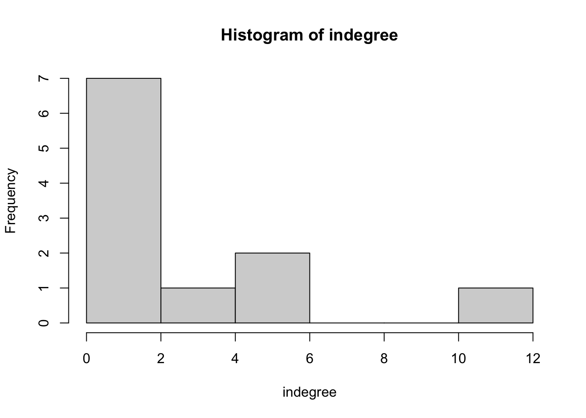

1 Elaboration on Introduction and Network Visualization
For my research on interdisciplinarity in collaboration networks, it is useful to proceed stepwise. For now, I think I need the following steps:
My descriptive research question is:
RQ1: did collaboration networks become more interdisciplinary over time, i.e. did the structure of the collaboration network change over time with regards to the frequency/proportion of interdisciplinary collaborations?
- I think this means that I should gather all collaboration partners of all sociology staff-members of the RU at t1.
- Then, I need to gather all collaboration partners of all sociology staff-members of the RU at t2.
- Then, I need some measure of interdisciplinarity as network characteristic (e.g.@luvzar2014community).
My explanatory research question is:
RQ2: to what extent does increasing interdisciplinarity at the macro-level(=network) lead to selective/partial clustering at the micro level?
So, this question is about how structural factors lead to clustering around some individuals, or how network characteristics may lead to some individuals acting as collaboration-brokers. Or: are there selection-effects of researchers who are interdisciplinary-focused?
- To engage with this question, I think it is necessary to gather relationship characteristics. So, after determining the degree of interdisciplinarity of the network, I could look at the ego-net level. I expect that interdisciplinary collaborations on the macro-level have a kind of mushrooming effect on relations on the micro-level, as interdisciplinary research collaborations automatically mean new connections (at departments, faculties, etc.). Following this I could, for example, look at the consequences (in terms of homophily, for example) if the network indeed turns out to be clustered around interdisciplinarity. This would result in the observation that researchers who engage in interdisciplinary research a lot are more likely to engage in even more interdisciplinary research, and researchers who do not regularly engage in interdisciplinary research become more ‘isolated’. This would result in less in- and out-degrees. DOES THIS MAKE SENSE???
NOTES: look at openAlex at how their logic works with disciplinarity. ## Notes Week 4
We did not yet cover whole network characteristics. Of course, clustering in ego-nets will differ from socio-nets. We lso talked about selection and influence. This is a bit different in a whole socionet. Because here, one is connected with people across different distances.
FOR MY PURPOSE, HOW DO I MEASURE INTERDISCIPLINARITY? YOU COULD MEASURE IT AS 1/0, INTERDISCIPLINARITY OR NOT, BUT THEN YOU LOSE ALOT OF INFORMATION. SO, THERE SHOULD BE A MORE CONCISE WAY. YOU CAN ALSO LOOK AT OVERLAP AND DISTANCE BETWEEN DISCIPLINES. E.G. CRIMINOLOGY AND INCLUSION/EXCLUSION PROCESS. HOW ARE THESE THEMES LINKED? ONE OPTION IS TO FIRST CREATE DIVERSITY INDEX (PROPORTION OF RESEARCH THAT A RESEARCHER HAS DONE IN POLITICAL SCIENCE, SOCIOLOGY), ETC. AND THEN CREATE A WEIGHT TO IT. E.G. WHAT IS THE CHANCE THAT ONE IS A SOCIOLOGIST, ONE IS A POLITICAL SCIENTIST, BUT TAKING INTO ACCOUNT THE RELATION BETWEEN THESE DISCIPLINES. E.G. SOCIOLOGY AND POLSCI IS CLOSER THAN SOCIOLOGY AND NATURAL SCIENCES.
- SO FIRST GIVE PROPORTION TO RESEARCHER
- THEN CREATE SOME DISTANCE SCORE BETWEEN DISCIPLINES
- THEN CREATE SOME DISTANCE SCORE BETWEEN SCIENTIST
This relates to segregation. How do we ‘calculate’ segregation? In this case, node-attributes should hang together. For example, the product of all node-attributes who are the same:
Sigma_ij(X_i * X_j * w_ij)
Standardized: Sigma_ij(z_i * X_j * w_ij)
But, control for network size. Maybe:
(Sigma_ij(z_i * X_j * w_ij))/N
But, we need to take into account all ties
(Sigma_ij(z_i * X_j * w_ij))/(N(w_ij))
But above, w_ij is defined as: is there a relation 1/0. But some nodes are even further away from other nodes. So, w_ij could also be defined as where the distance is AT LEAST 2, but that gives other segregation score! So, w_ij is a distance score. It is very important how you define it.
So now we know that we can have a segregation measure. Now back to influence. Are nodes influenced equally strong by their ego-network regardless how large that network is (row standardize), or do all the alters have the same influence on i (not row standardize). In other words, how do you theoretically define influence-processes in a network.
1.1 Exercise
#load R package to plot
require(igraph)#Plot graph
g <- make_graph("Zachary")
plot(g) Okay, let’s show the adjacency matrix that belongs to it.
Okay, let’s show the adjacency matrix that belongs to it.
gmatrix <- as_adjacency_matrix(g, type="both", sparse=FALSE)
gmatrix## [,1] [,2] [,3] [,4] [,5] [,6] [,7] [,8] [,9] [,10] [,11] [,12] [,13]
## [1,] 0 1 1 1 1 1 1 1 1 0 1 1 1
## [2,] 1 0 1 1 0 0 0 1 0 0 0 0 0
## [3,] 1 1 0 1 0 0 0 1 1 1 0 0 0
## [4,] 1 1 1 0 0 0 0 1 0 0 0 0 1
## [5,] 1 0 0 0 0 0 1 0 0 0 1 0 0
## [6,] 1 0 0 0 0 0 1 0 0 0 1 0 0
## [7,] 1 0 0 0 1 1 0 0 0 0 0 0 0
## [8,] 1 1 1 1 0 0 0 0 0 0 0 0 0
## [9,] 1 0 1 0 0 0 0 0 0 0 0 0 0
## [10,] 0 0 1 0 0 0 0 0 0 0 0 0 0
## [11,] 1 0 0 0 1 1 0 0 0 0 0 0 0
## [12,] 1 0 0 0 0 0 0 0 0 0 0 0 0
## [13,] 1 0 0 1 0 0 0 0 0 0 0 0 0
## [14,] 1 1 1 1 0 0 0 0 0 0 0 0 0
## [15,] 0 0 0 0 0 0 0 0 0 0 0 0 0
## [16,] 0 0 0 0 0 0 0 0 0 0 0 0 0
## [17,] 0 0 0 0 0 1 1 0 0 0 0 0 0
## [18,] 1 1 0 0 0 0 0 0 0 0 0 0 0
## [19,] 0 0 0 0 0 0 0 0 0 0 0 0 0
## [20,] 1 1 0 0 0 0 0 0 0 0 0 0 0
## [21,] 0 0 0 0 0 0 0 0 0 0 0 0 0
## [22,] 1 1 0 0 0 0 0 0 0 0 0 0 0
## [23,] 0 0 0 0 0 0 0 0 0 0 0 0 0
## [24,] 0 0 0 0 0 0 0 0 0 0 0 0 0
## [25,] 0 0 0 0 0 0 0 0 0 0 0 0 0
## [26,] 0 0 0 0 0 0 0 0 0 0 0 0 0
## [27,] 0 0 0 0 0 0 0 0 0 0 0 0 0
## [28,] 0 0 1 0 0 0 0 0 0 0 0 0 0
## [29,] 0 0 1 0 0 0 0 0 0 0 0 0 0
## [30,] 0 0 0 0 0 0 0 0 0 0 0 0 0
## [31,] 0 1 0 0 0 0 0 0 1 0 0 0 0
## [32,] 1 0 0 0 0 0 0 0 0 0 0 0 0
## [33,] 0 0 1 0 0 0 0 0 1 0 0 0 0
## [34,] 0 0 0 0 0 0 0 0 1 1 0 0 0
## [,14] [,15] [,16] [,17] [,18] [,19] [,20] [,21] [,22] [,23] [,24] [,25]
## [1,] 1 0 0 0 1 0 1 0 1 0 0 0
## [2,] 1 0 0 0 1 0 1 0 1 0 0 0
## [3,] 1 0 0 0 0 0 0 0 0 0 0 0
## [4,] 1 0 0 0 0 0 0 0 0 0 0 0
## [5,] 0 0 0 0 0 0 0 0 0 0 0 0
## [6,] 0 0 0 1 0 0 0 0 0 0 0 0
## [7,] 0 0 0 1 0 0 0 0 0 0 0 0
## [8,] 0 0 0 0 0 0 0 0 0 0 0 0
## [9,] 0 0 0 0 0 0 0 0 0 0 0 0
## [10,] 0 0 0 0 0 0 0 0 0 0 0 0
## [11,] 0 0 0 0 0 0 0 0 0 0 0 0
## [12,] 0 0 0 0 0 0 0 0 0 0 0 0
## [13,] 0 0 0 0 0 0 0 0 0 0 0 0
## [14,] 0 0 0 0 0 0 0 0 0 0 0 0
## [15,] 0 0 0 0 0 0 0 0 0 0 0 0
## [16,] 0 0 0 0 0 0 0 0 0 0 0 0
## [17,] 0 0 0 0 0 0 0 0 0 0 0 0
## [18,] 0 0 0 0 0 0 0 0 0 0 0 0
## [19,] 0 0 0 0 0 0 0 0 0 0 0 0
## [20,] 0 0 0 0 0 0 0 0 0 0 0 0
## [21,] 0 0 0 0 0 0 0 0 0 0 0 0
## [22,] 0 0 0 0 0 0 0 0 0 0 0 0
## [23,] 0 0 0 0 0 0 0 0 0 0 0 0
## [24,] 0 0 0 0 0 0 0 0 0 0 0 0
## [25,] 0 0 0 0 0 0 0 0 0 0 0 0
## [26,] 0 0 0 0 0 0 0 0 0 0 1 1
## [27,] 0 0 0 0 0 0 0 0 0 0 0 0
## [28,] 0 0 0 0 0 0 0 0 0 0 1 1
## [29,] 0 0 0 0 0 0 0 0 0 0 0 0
## [30,] 0 0 0 0 0 0 0 0 0 0 1 0
## [31,] 0 0 0 0 0 0 0 0 0 0 0 0
## [32,] 0 0 0 0 0 0 0 0 0 0 0 1
## [33,] 0 1 1 0 0 1 0 1 0 1 1 0
## [34,] 1 1 1 0 0 1 1 1 0 1 1 0
## [,26] [,27] [,28] [,29] [,30] [,31] [,32] [,33] [,34]
## [1,] 0 0 0 0 0 0 1 0 0
## [2,] 0 0 0 0 0 1 0 0 0
## [3,] 0 0 1 1 0 0 0 1 0
## [4,] 0 0 0 0 0 0 0 0 0
## [5,] 0 0 0 0 0 0 0 0 0
## [6,] 0 0 0 0 0 0 0 0 0
## [7,] 0 0 0 0 0 0 0 0 0
## [8,] 0 0 0 0 0 0 0 0 0
## [9,] 0 0 0 0 0 1 0 1 1
## [10,] 0 0 0 0 0 0 0 0 1
## [11,] 0 0 0 0 0 0 0 0 0
## [12,] 0 0 0 0 0 0 0 0 0
## [13,] 0 0 0 0 0 0 0 0 0
## [14,] 0 0 0 0 0 0 0 0 1
## [15,] 0 0 0 0 0 0 0 1 1
## [16,] 0 0 0 0 0 0 0 1 1
## [17,] 0 0 0 0 0 0 0 0 0
## [18,] 0 0 0 0 0 0 0 0 0
## [19,] 0 0 0 0 0 0 0 1 1
## [20,] 0 0 0 0 0 0 0 0 1
## [21,] 0 0 0 0 0 0 0 1 1
## [22,] 0 0 0 0 0 0 0 0 0
## [23,] 0 0 0 0 0 0 0 1 1
## [24,] 1 0 1 0 1 0 0 1 1
## [25,] 1 0 1 0 0 0 1 0 0
## [26,] 0 0 0 0 0 0 1 0 0
## [27,] 0 0 0 0 1 0 0 0 1
## [28,] 0 0 0 0 0 0 0 0 1
## [29,] 0 0 0 0 0 0 1 0 1
## [30,] 0 1 0 0 0 0 0 1 1
## [31,] 0 0 0 0 0 0 0 1 1
## [32,] 1 0 0 1 0 0 0 1 1
## [33,] 0 0 0 0 1 1 1 0 1
## [34,] 0 1 1 1 1 1 1 1 01.1.1 Descriptives
Okay, let’s explore
#to get the number of nodes
vcount(g)## [1] 34#to count number of edges, ties
ecount(g)## [1] 781.1.1.1 Degree
Okay, so we have 34 nodes and a total of 78 ties. Let’s look at degree. What was it again?
igraph::degree(g)## [1] 16 9 10 6 3 4 4 4 5 2 3 1 2 5 2 2 2 2 2 3 2 2 2 5 3
## [26] 3 2 4 3 4 4 6 12 17dyad.census(g)## Warning: `dyad.census()` was deprecated in igraph 2.0.0.
## ℹ Please use `dyad_census()` instead.
## This warning is displayed once every 8 hours.
## Call `lifecycle::last_lifecycle_warnings()` to see where this warning was
## generated.## Warning: `dyad_census()` requires a directed graph.## $mut
## [1] 78
##
## $asym
## [1] 0
##
## $null
## [1] 483This is the amount of indegrees of each node. But let’s take another look. In the histogram we can see that there are many people with a few indegrees, but not many people with a lot of indegrees.
hist(table(degree(g)), xlab='indegree', main= 'Histogram of indegree')
1.1.1.2 Transitivity
What was transitivity again? “The number of transitive triads divided by all possible transitive triads” @SNASS. So try the transitivity function.
# be aware that directed graphs are considered as undirected. but g is undirected.
igraph::transitivity(g, type = c("localundirected"), isolates = c("NaN", "zero"))## [1] 0.1500000 0.3333333 0.2444444 0.6666667 0.6666667 0.5000000 0.5000000
## [8] 1.0000000 0.5000000 0.0000000 0.6666667 NaN 1.0000000 0.6000000
## [15] 1.0000000 1.0000000 1.0000000 1.0000000 1.0000000 0.3333333 1.0000000
## [22] 1.0000000 1.0000000 0.4000000 0.3333333 0.3333333 1.0000000 0.1666667
## [29] 0.3333333 0.6666667 0.5000000 0.2000000 0.1969697 0.1102941So, select a part of the network, in this case a focus on node 2.
gmatrix1 <- gmatrix
diag(gmatrix1) <- 1
nodes <- gmatrix1[2,] == 1
sel <- gmatrix1[nodes,nodes]
diag(sel) <- 0
gmatrix2 <- graph_from_adjacency_matrix(sel, mode = "undirected")
plot(gmatrix2)
nodes## [1] TRUE TRUE TRUE TRUE FALSE FALSE FALSE TRUE FALSE FALSE FALSE FALSE
## [13] FALSE TRUE FALSE FALSE FALSE TRUE FALSE TRUE FALSE TRUE FALSE FALSE
## [25] FALSE FALSE FALSE FALSE FALSE FALSE TRUE FALSE FALSE FALSE1.1.1.3 Betweenness
igraph::betweenness(g, directed = FALSE)## [1] 231.0714286 28.4785714 75.8507937 6.2880952 0.3333333 15.8333333
## [7] 15.8333333 0.0000000 29.5293651 0.4476190 0.3333333 0.0000000
## [13] 0.0000000 24.2158730 0.0000000 0.0000000 0.0000000 0.0000000
## [19] 0.0000000 17.1468254 0.0000000 0.0000000 0.0000000 9.3000000
## [25] 1.1666667 2.0277778 0.0000000 11.7920635 0.9476190 1.5428571
## [31] 7.6095238 73.0095238 76.6904762 160.5515873So a lot of ties go through node 1.
1.1.1.4 Dyad census
igraph::dyad.census(g)## Warning: `dyad_census()` requires a directed graph.## $mut
## [1] 78
##
## $asym
## [1] 0
##
## $null
## [1] 483So, 78 mutual dyads, 0 asymmetrical. So, here you can see that this entails an undirected network. 483 pairs with no connections.
igraph::triad.census(g)## Warning: `triad.census()` was deprecated in igraph 2.0.0.
## ℹ Please use `triad_census()` instead.
## This warning is displayed once every 8 hours.
## Call `lifecycle::last_lifecycle_warnings()` to see where this warning was
## generated.## Warning in triad_census(graph = graph): At
## vendor/cigraph/src/misc/motifs.c:1140 : Triad census called on an undirected
## graph. All connections will be treated as mutual.## [1] 3971 0 1575 0 0 0 0 0 0 0 393 0 0 0 0
## [16] 45So, this shows that there are 3971 ‘003’ tryads (i.e. no ties), 393 ‘201’ tryads (i.e. A <-> B <-> C) and 45 ‘300’ triads (complete graphs)
igraph::transitivity(g, type = "global")## [1] 0.25568181.1.1.5 Network visualization
# changing V
V(g)$size = betweenness(g, normalized = T, directed = FALSE) * 60 + 10 #changing the node size based on betweenness of the node!!
V(g)$color = 'green'
plot(g, mode = "undirected")
But, we want it more clear
set.seed(2345)
l <- layout_with_mds(g) #https://igraph.org/r/doc/layout_with_mds.html
plot(g, layout = l) Hmm, still not what we want.
Hmm, still not what we want.
l #let us take a look at the coordinates## [,1] [,2]
## [1,] 1.070931935 -0.172458113
## [2,] 0.732844464 0.754023309
## [3,] 0.100582299 0.397693607
## [4,] 0.708246655 0.570205545
## [5,] 1.816293170 -0.120778206
## [6,] 1.881329566 -0.135518854
## [7,] 1.881329566 -0.135518854
## [8,] 0.812606714 0.472619437
## [9,] -0.003769996 0.615513628
## [10,] -0.685680315 0.621065149
## [11,] 1.816293170 -0.120778206
## [12,] 1.621247830 -0.065820692
## [13,] 1.637845123 0.001789972
## [14,] 0.067317230 0.681421148
## [15,] -1.796316404 0.351417630
## [16,] -1.796316404 0.351417630
## [17,] 2.775260452 -0.124317652
## [18,] 1.616210024 0.182510197
## [19,] -1.796316404 0.351417630
## [20,] 0.048362858 0.566654982
## [21,] -1.796316404 0.351417630
## [22,] 1.616210024 0.182510197
## [23,] -1.796316404 0.351417630
## [24,] -1.891240567 -0.799574907
## [25,] -0.258345165 -2.006346563
## [26,] -0.360530857 -2.131642875
## [27,] -1.865177401 0.128596564
## [28,] -0.760226022 -0.529392331
## [29,] -0.710979936 -0.299960128
## [30,] -1.898426916 -0.149398746
## [31,] -0.568691923 0.804189411
## [32,] -0.048136037 -0.870967614
## [33,] -1.023681000 -0.035802363
## [34,] -1.146442924 -0.037605192l[34, 1] <- -3.5
plot(g, layout = l)Better